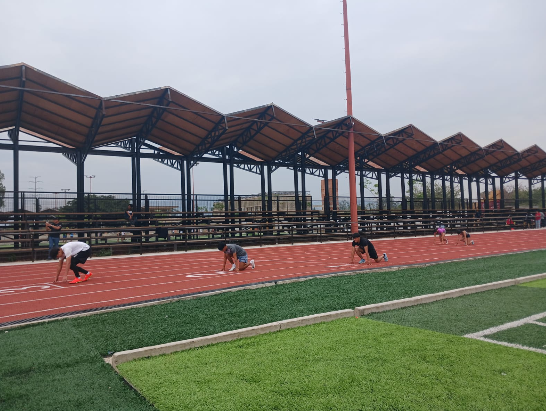
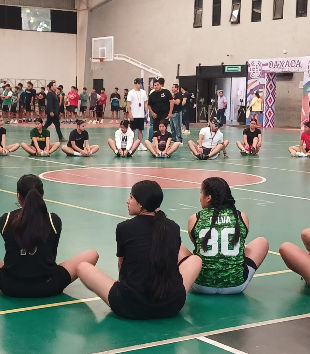
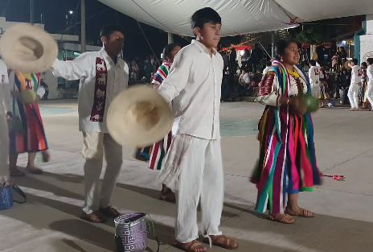
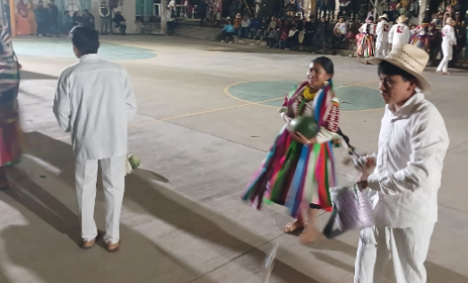

ATLETISMO
El EMSaD 45 ha participado en encuentros deportivos organizados por el CECyTEO, donde estudiantes representan a la región Mixteca en competencias estatales. En atletismo, los alumnos han formado parte de eventos deportivos entre EMSaD y planteles CECyTEO, destacando el esfuerzo y disciplina de los jóvenes en pruebas físicas y carreras. Estas actividades ayudan a representar orgullosamente a San Pablo Tijaltepec en Oaxaca.

BASQUETBOL
El básquetbol es una de las actividades deportivas más importantes del EMSaD 45. Equipos del plantel han participado en torneos y encuentros deportivos realizados en distintas regiones del estado. Los estudiantes viajan a diferentes sedes para competir contra otros EMSaD y planteles del CECyTEO, fortaleciendo el trabajo en equipo, la convivencia y la representación de la comunidad.

ACTIVIDADES CULTURALES
DANZA
En las presentaciones de danza, los alumnos participan en: Bailables regionales Danzas tradicionales de Oaxaca Eventos culturales y aniversarios escolares Encuentros artísticos del CECyTEO Durante la celebración del 20 aniversario del EMSaD 45 se realizó una gala cultural con diferentes participaciones artísticas, incluyendo danza tradicional y representaciones culturales de la comunidad. � La Onda Oaxaca +1 La danza permite que los estudiantes expresen la cultura y costumbres de San Pablo Tijaltepec, además de representar orgullosamente a la región Mixteca en distintos eventos culturales de Oaxaca. � La Onda Oaxaca

CANTO
El canto forma parte de las actividades artísticas y culturales del plantel. En festivales y eventos escolares, estudiantes participan interpretando canciones tradicionales, música regional y presentaciones artísticas en ceremonias y celebraciones escolares. Estas actividades ayudan a desarrollar: Seguridad y expresión artística Trabajo en equipo Participación cultural Talento musical de los estudiantes
